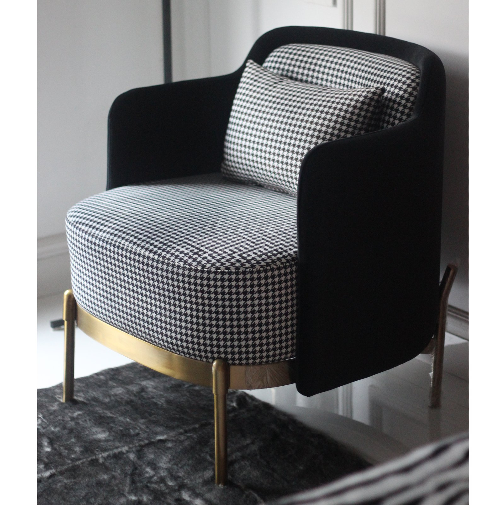
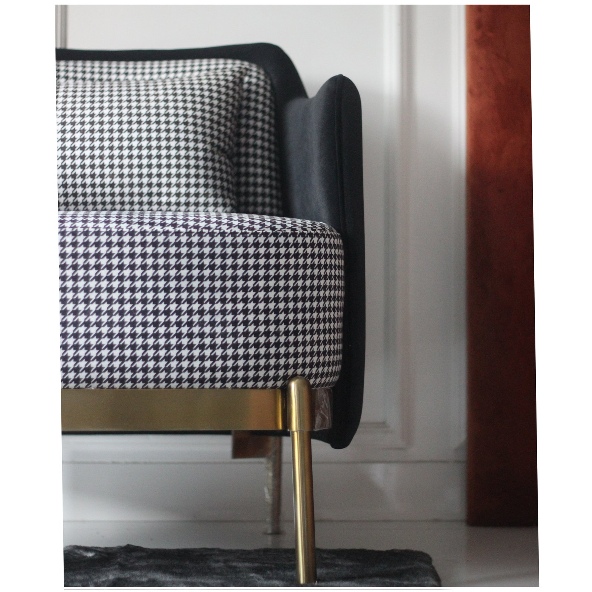
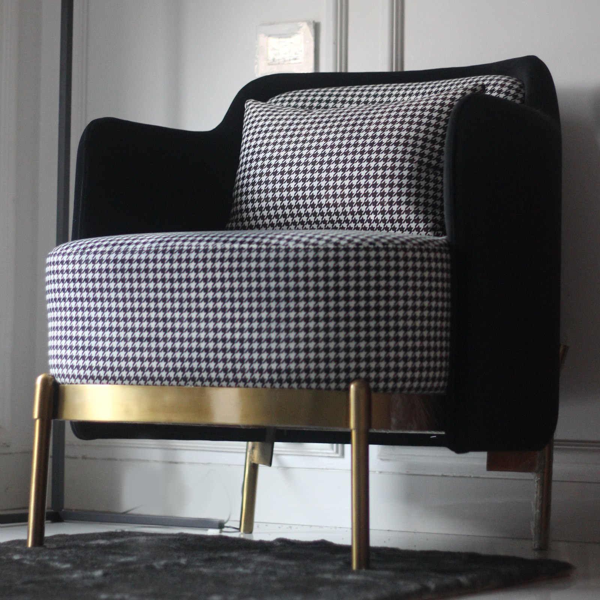
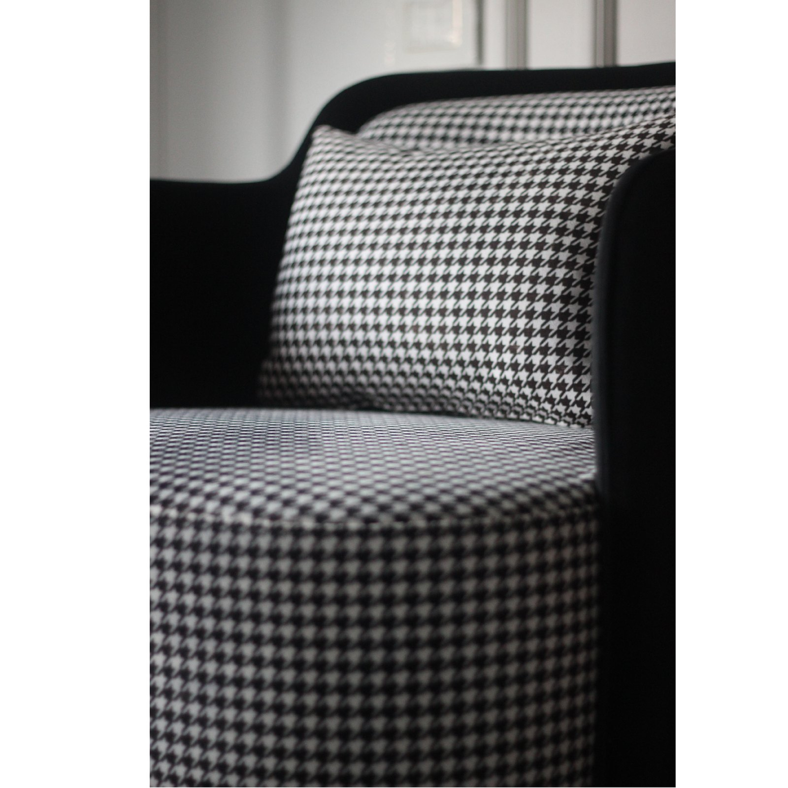

06Related Work
A one-off occasional armchair from the AKD studio — a black-velvet tub shell wrapped around a houndstooth seat and bolster, cradled on a turned-brass base. Old-world pattern, modern metal.

Retro French Chic is a one-off occasional chair from AKD's own furniture line. It sets a familiar tailoring pattern — houndstooth — against a soft velvet shell and a base in turned brass, so the piece reads at once classic and contemporary.
The form is a tub: a high, enveloping back that wraps to low arms, holding the sitter without crowding the room.
Houndstooth on the inside, velvet on the out — brass underneath.
The seat and bolster are hand-upholstered in a black-and-white houndstooth; the outer shell is a deep black velvet. The whole sits in a turned-brass cradle, with slender brass legs that splay to the floor — a warm metal line under a graphic textile.
Curve answers curve: the round seat and the round brass base echo each other, while the high tub back and the straight splayed legs hold the tension. Photographed in a panelled room against a grey rug, the piece is as much a still life as a seat.



A finished, photographed one-off — the first piece of the Retro French Chic collection, and a study in pairing a tailoring pattern with metal and velvet.